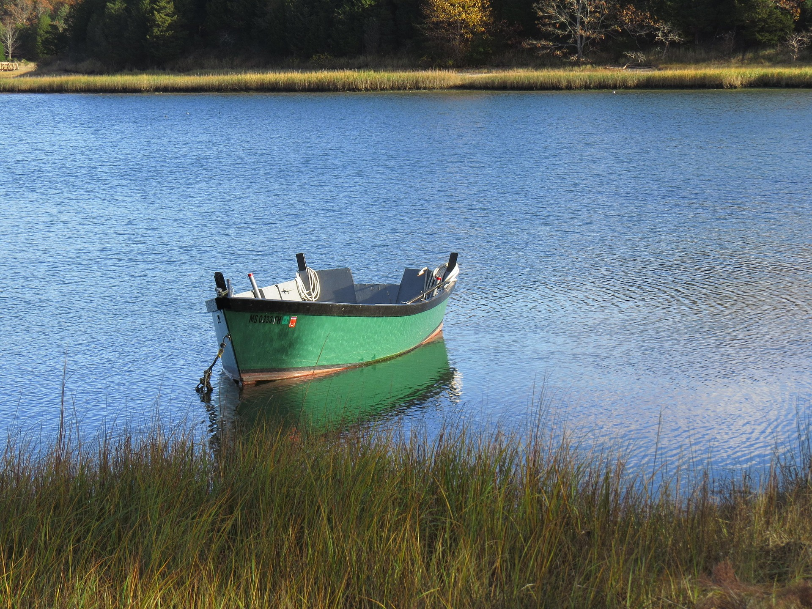

Blue Lake with a Boat
nice activity

The lake rests in a deep, quiet blue, so still it seems to hold the sky itself. The small boat, gently waiting on the surface, invites a pause — a moment of silence where everything feels lighter. Here, nature speaks without words: in the reflection of the water, in the calm of the wind, in the serenity that only a place like this can offer. It’s a space where time slows down and the soul can breathe.
Activities When Working Digitally
nice activty
Working in a digital environment can be exciting and productive, but it also comes with a hidden cost: long hours sitting, staring at screens, and staying indoors. That’s why spending time outdoors is not just a break — it’s a necessity. Fresh air, natural light, and physical movement help reset the mind and reduce stress. When you step outside, your brain gets a chance to disconnect from constant notifications and reconnect with the real world.
Outdoor activities improve focus, creativity, and overall well‑being. A simple walk, a moment by a lake, or even sitting under a tree can boost your energy and help you return to your digital tasks with a clearer mind. Nature balances the intensity of digital work, reminding us that productivity isn’t only about staying at the computer — it’s also about taking care of your body and mental health.
clean desktop
productive place
nice desktop Clean, Organized, Efficient, Minimalist, Minimalistic, Productive, Comfortable, Comfy, Neat, Tidy, Streamlined, Sleek, Simple, Clear, Smooth, Polished, Clutter free, Well structured, Aesthetic, Functional, Minimal, Modern, Lightweight, Balanced, Focused, Refined, Crisp